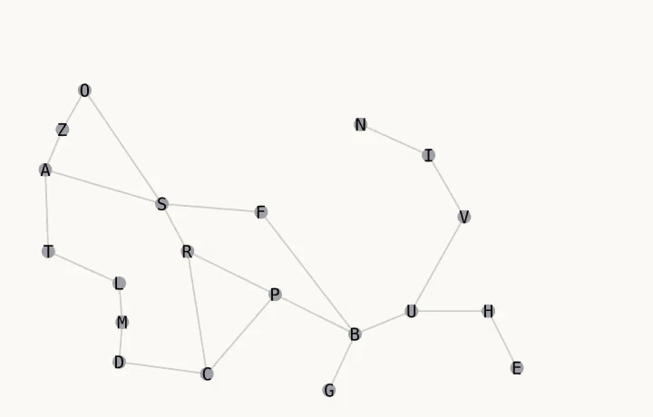
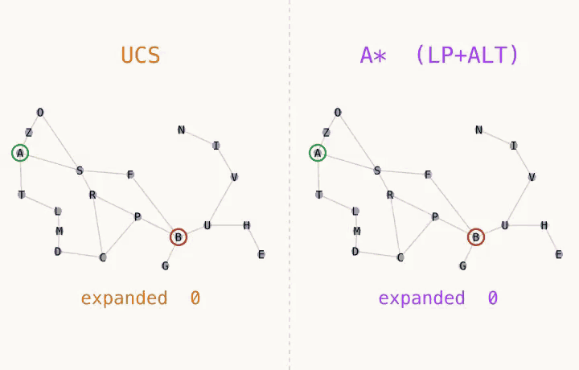
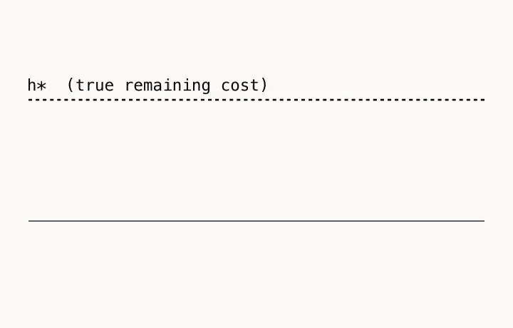
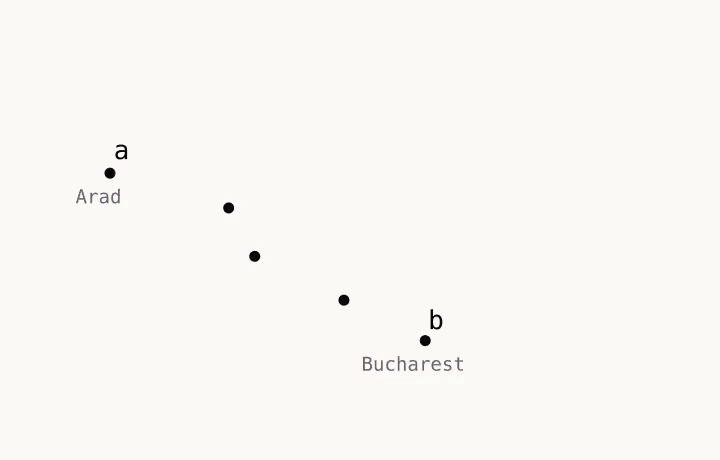
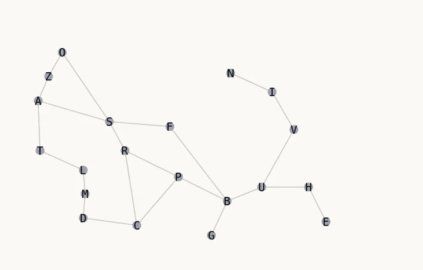
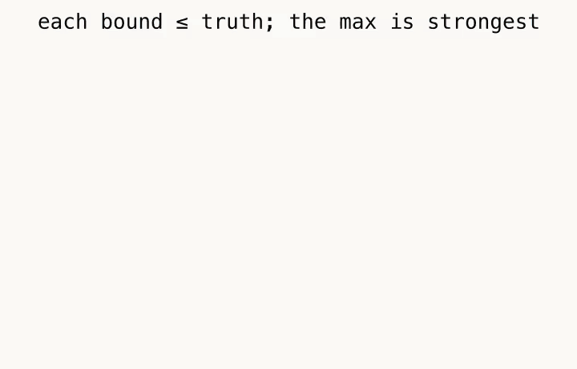
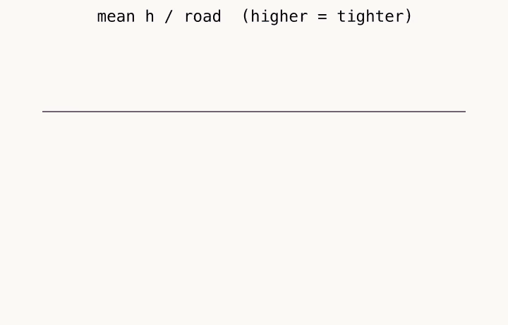

How the search works
Finding a cheapest route on this map is a search. We start with a method that knows nothing about the goal (uninformed), watch it waste effort, then upgrade it with a heuristic, and finally combine two heuristics into one. Every number below was measured on all 380 ordered city pairs.
1 · Uniform-Cost Search (UCS)
Keep a frontier of nodes to explore. Always expand the node with the smallest known cost from the start, g(n), the kilometres already driven. Because every road cost is non-negative, the cheapest frontier node can never be beaten later, so UCS is optimal and complete.
The catch: the frontier grows as expanding cost contours, rings of equal g, that spread in every direction. UCS cannot look at the map and see where Bucharest is, so it explores west, north and south just as eagerly as east. Its work grows like O(b^{1+\lfloor C^*/\varepsilon \rfloor}).

2 · A★: adding a guess
A★ keeps the same g(n) but adds a heuristic h(n): our estimate of the remaining cost from n to the goal. It expands whatever node has the smallest
The two parts do different jobs. g is exact and keeps the result optimal; h is a guess that steers the search toward the goal so it wastes less time on the wrong side of the map.
The heuristic decides how good A★ is. With h \equiv 0 it degenerates back into UCS. With a perfect h it walks straight to the goal. Using h alone and no g gives greedy best-first: fast, but easily fooled into a non-optimal route.

3 · What a heuristic actually is
A heuristic h(n) is a cheap estimate of the cost still to go, computed without solving the rest of the search. Two properties matter:
- Admissible (optimistic): h(n) \le h^{*}(n), the true cheapest cost to the goal. This is what guarantees A★ optimality.
- Consistent (monotonic): h(n) \le c(n,n\prime) + h(n\prime) for every road n \to n\prime. Consistency implies admissibility, and it stops A★ from ever reopening a node.
Quality is about informedness. We say h_2 dominates h_1 when h_2(n) \ge h_1(n) for every node. A dominating (and consistent) heuristic expands no more nodes; bigger guesses mean fewer surprises, as long as they stay under the truth.

4 · Our first bound: LP vector-decomposition
Draw each road as a little arrow (a vector) whose length is its real kilometre value, laid out using the map's schematic pixel coordinates. To get from a to b you must cross the chord between them. A road route is a chain of these arrows, so its arrows must add up to that chord. The shortest any route can possibly be is therefore the cheapest combination of arrows that still adds up to the chord: a small linear program:
Why it is admissible: the LP relaxes the real problem; it allows fractional use of roads and ignores connectivity, so its optimum can only be lower than any actual route. A lower bound is exactly what we want. Two neighbouring cities come out exact (e.g. h_{LP}(\text{Arad},\text{Sibiu}) = 140). It is solved offline with scipy/HiGHS and read from a lookup table at runtime. No SLD, no GPS, only the PDF's metre/kilometre data.

5 · Our second bound: ALT (landmarks)
Pick a few landmark cities L, far-flung corners of the map. Then precompute the true shortest road distance d(L,n) from each landmark to every node (one Dijkstra run per landmark). For any node n and goal:
This is the triangle inequality doing the work. Going through L is one (usually longer) way to get from n to the goal, so d(n, goal) \ge |d(L,n) - d(L,goal)|. The right side never exceeds the true distance, so it is admissible by construction, no empirical checking needed. It uses only road kilometres. Taking the \max over landmarks keeps it a lower bound while making it tighter.
More landmarks, tighter bound. The app ships three presets:
| Preset | Landmarks | h/road |
|---|---|---|
| lm2 | Eforie, Oradea | 0.87 |
| lm4 | + Neamt, Giurgiu | 0.97 |
| lm8 | + Timisoara, Vaslui, Drobeta, Hirsova | 0.99 |

6 · The ensemble: take the maximum
We have two admissible bounds that come from different evidence. Combine them by taking whichever is larger:
Why this works (three reasons):
- Still admissible. Both inputs are \le the true cost, so their maximum is too. A★ therefore stays optimal. (This is why you may only take a \max when every component is admissible; one overestimating component would leak straight in.)
- Tighter than either alone. The max is \ge both components at every node: it dominates each of them. By the dominance rule, A★ with the ensemble expands no more nodes than A★ with either bound by itself.
- Different failure modes. LP judges by geometry and distance; ALT judges by pure road metrics. Each is weak on different node pairs, so the max collects the stronger certificate wherever it exists: the best of both.

7 · Does it perform better? (measured)
An independent evaluation re-ran everything over all 380 ordered city pairs with its own Dijkstra oracle and a standard A★. Two things matter: informedness (how close h sits to the truth, as mean h/\text{road}) and expansions (work done).
| Heuristic | h/road |
|---|---|
| LP only | 0.683 |
| ALT lm2 | 0.872 |
| ALT lm4 | 0.972 |
| ALT lm8 | 0.985 |
| LP + ALT (lm8) | 0.986 |
| Search | expanded | generated |
|---|---|---|
| UCS (h = 0) | 4180 | 4971 |
| A★ · LP | 2316 | 3558 |
| A★ · ALT lm2 | 2191 | 3419 |
| A★ · ALT lm4 | 1984 | 3335 |
| A★ · ALT lm8 | 1924 | 3310 |
| A★ · LP+ALT | 1922 | 3306 |
Reading the numbers. Going from uninformed to informed is the big win UCS expands 4180 nodes across the pair set; A★ with the ensemble only 1922, roughly a 55% cut, for the same optimal cost. Within informed search, tighter really is cheaper: the LM ladder (0.87 → 0.97 → 0.99) walks expansions down step by step.
The ensemble sits at the bottom, but honestly only just: against ALT lm8 alone it adds +0.0005 informedness and saves 2 expansions, because on this map ALT lm8 usually already dominates LP. Its real value is robustness: it is a bound from a second, independently-derived method, so admissibility never rests on the landmark choice. Zero admissibility violations and zero wrong optimal costs were measured for every variant.

8 · Reading the maps
Two lanes. Pick any two algorithms in the algorithm box, lane A and lane B, and run them on the same From → To route. The Algorithm Comparison cards beside the map show each lane's live and final numbers, and the better value of each pair is marked with a green chip.
- Node colours: current · frontier · visited · path · unvisited, with start and goal rings (legend under the map).
- Landmarks: each lane has a landmark dropdown. Algorithms that need landmarks choose 2 / 4 / 8; the others can pick Off / 2 / 4 / 8 to show landmarks on the map (visual only). Turn on the Landmarks tool and click cities to build a custom set; the dropdown then shows Custom (n).
- Distances: each road's length in km. A badge turns pink-purple when a lane has explored that road and orange-red when it is on the final route.
- Heatmap: each city coloured by its lane's h-value: red near the goal, blue far away.
- Straight Line: the SLD arc from start to goal that would be “cheating”; shown only for intuition, never fed to the heuristic.
Merged map (default). With Merge on, both lanes share one map. Every city disc is split down the middle: the left half is lane A, the right half is lane B, each in the usual legend colours. Lane A's roads are solid; lane B's roads are thinner and dashed, drawn on top, so you can see which roads both lanes used and which only one did. Turn Merge off to put map A and map B side by side, each showing only its own lane. With Merge on, a click with the Landmarks tool sets that city for both lanes; with Merge off, click on map A or map B to set it for that lane only.
Guide based on the search implementation in src/engine/. Measurements come
from an independent evaluation over all 380 ordered city pairs.